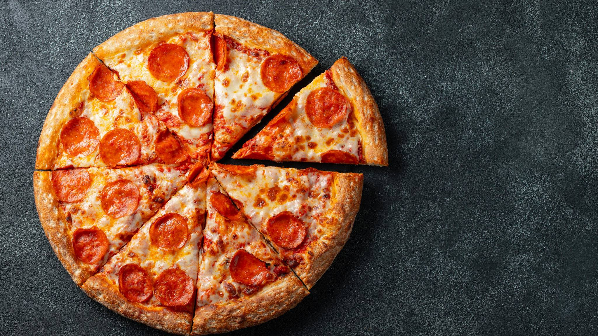

Pizza

Ingredientes
Masa
- 500 g de harina de trigo
- 250 ml de agua tibia
- 1 sobre de levadura seca
- 4 cucharadas soperas de aceite de oliva
- 1 cucharada sopera de sal
Salsa
- 400 g de salsa de tomate
- Orégano
- Pimienta
- Ajo molido
- Cebolla molida
Preparación
Masa
- En un recipiente mezclar la harina de trigo la levadura y la sal.
- Agregar el aceite de oliva y luego la mitad del agua tibia.
- Amasar e ir incorporando el agua restante lentamente.
- Amasar por lo menos 10 minutos hasta formar una masa homogénea.
- Dejar reposar la masa en un lugar caliente por lo menos una hora.
- Precalentar el horno a 200 °C
Salsa
- Calentar la salsa en una olla a fuego bajo
- Agregar el orégano, pimienta, cebolla molida, ajo molido, la sal y mezclar lentamente.
- Dejar enfriar
Pizza
- Dividir la masa en dos partes iguales.
- Amasar una parte hasta formar una bola y extender con el rodillo hasta darle la forma del molde.
- Extender la masa sobre el molde.
- Cubrir la masa con la salsa y luego agregar los ingredientes elegidos para el topping. Por ejemplo:
- Champiñones, jamón, aceitunas negras, queso.
- Atún, cebolla, queso
- Hornear hasta que la masa esté dorada.